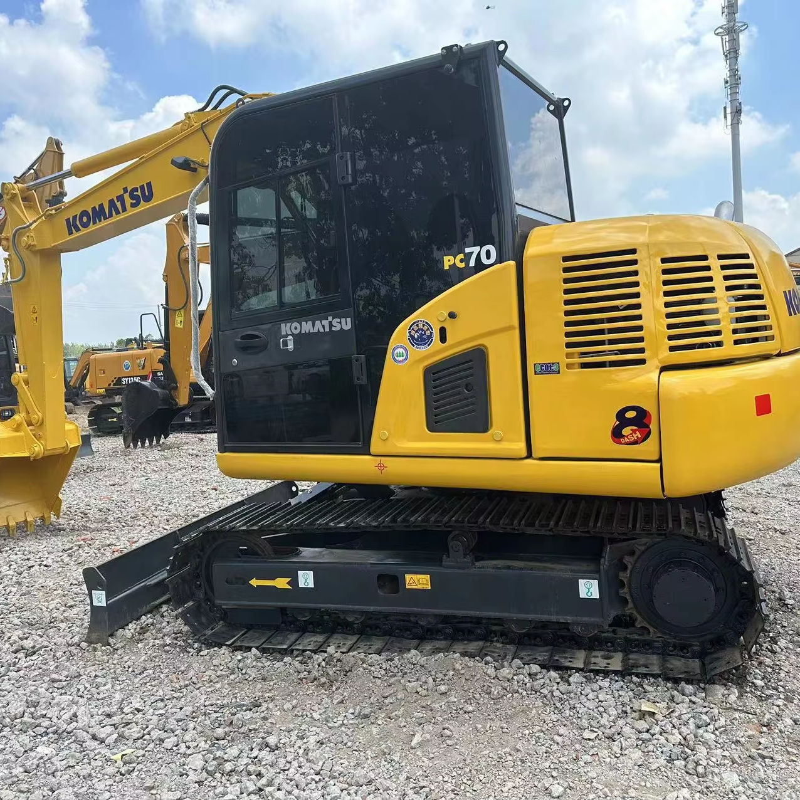

Refurbished Komatsu PC70 Excavator
The Komatsu PC70 is a compact and highly versatile excavator, offering a perfect balance of power, maneuverability, and efficiency for a wide range of construction and excavation tasks. Whether you're working in tight urban spaces, performing trenching or demolition, or handling landscaping projects, the PC70 provides excellent performance and reliability. A refurbished Komatsu PC70 offers all the advantages of a high-quality machine at a significantly lower cost compared to new models, making it an appealing option for many businesses and contractors.
Honestly, it's almost impossible to buy a brand new excavator from China. They either don't exist or are made in China. If a Chinese seller tells you their Caterpillar/Komatsu/Volvo/Kobelco/Hitachi is brand new, they're lying. Therefore, a refurbished excavator is your best bet.

Here are the detailed specifications for a refurbished Komatsu PC70-8 excavator:
Operating Weight and Dimensions
- Operating Weight: 6,600–6,800 kg
- Overall Length: ~6.1–6.3 meters
- Overall Width: ~2.32 meters
- Overall Height: ~2.65–2.7 meters
- Tail Swing Radius: ~1.7–1.8 meters
- Ground Clearance: ~370–400 mm
- Track Width: 450 mm standard
Engine and Powertrain
- Engine Model: Komatsu SAA4D95LE-5 (Tier 2 compliant)
- Rated Power Output: ~48–52 kW (64–70 hp) @ 2,000 rpm
- Maximum Torque: ~240–260 Nm
- Fuel Tank Capacity: ~130 liters
- Travel Speed: 2.8–5.0 km/h
- Swing Speed: ~10 rpm
- Gradeability: Up to 30°
Hydraulic System
- Main Pump Type: Variable displacement axial piston pump
- Flow Rate: ~2 × 90–100 L/min
- System Pressure: Up to 27.5 MPa
- Hydraulic Oil Capacity: ~140–160 liters
- Boom Cylinder Bore: ~105 mm
- Arm Cylinder Bore: ~90 mm
- Bucket Cylinder Bore: ~80 mm
Performance Metrics
- Bucket Capacity: 0.28–0.35 m³
- Max Digging Depth: ~4.2–4.4 meters
- Max Reach (Horizontal): ~7.0–7.3 meters
- Max Dump Height: ~4.6–4.8 meters
- Bucket Digging Force: ~60–65 kN
- Arm Digging Force: ~42–45 kN
Cab and Operator Features
- Cab Type: ROPS/FOPS certified
- Display: LCD monitor with diagnostics and fuel tracking
- Controls: Pilot joystick controls with auxiliary hydraulic circuit
- Comfort: Adjustable suspension seat, optional air-conditioning
- Visibility: Wide glass area, optional rear-view camera, LED work lights
Smart Features and Efficiency
- Fuel Efficiency: Mechanical fuel injection with auto idle
- Emissions Control: Tier 2 compliant (no DPF or SCR)
- Telematics: KOMTRAX support in PC70-8 (optional)
- Transportability: Easily trailerable under 7-ton class
Attachments Compatibility
- Standard Bucket: 0.28–0.35 m³
- Optional Tools: Hydraulic breaker, auger, compactor, ripper
- Quick Coupler: Manual or hydraulic options available
Refurbishment Scope
Refurbished PC70 units typically include:
- Engine Overhaul: Cylinder head, injectors, turbo, seals
- Hydraulic Restoration: Pump recalibration, valve block testing, hose replacement
- Electrical Diagnostics: Monitor, sensors, wiring harness
- Cab Reconditioning: Seat, joysticks, HVAC, repainting
- Structural Repairs: Boom/bucket welding, bushing replacement, undercarriage rebuild
Overview of the Komatsu PC70 Excavator
The Komatsu PC70 is a well-known mini-excavator that has been designed for compact construction and demolition tasks. With a robust engine, strong hydraulic system, and a compact design, the PC70 excels in both small and medium-sized jobs. It's perfect for operations in confined spaces, such as urban streets, residential areas, and tight construction sites, where larger machines may struggle to fit.
Key Specifications of the Komatsu PC70
-
Operating Weight: 7,000–7,400 kg (15,432–16,290 lbs)
-
Engine Power: 46–50 kW (61–67 hp)
-
Max Digging Depth: 4.3 meters (14.1 feet)
-
Max Reach: 6.7 meters (22 feet)
-
Bucket Capacity: 0.25–0.3 cubic meters
-
Travel Speed: 5.5 km/h (3.4 mph)
-
Fuel Tank Capacity: 120 liters (31.7 gallons)
The PC70 is designed with a compact, lightweight structure, which enables it to work efficiently in smaller spaces while still providing significant power for digging, lifting, and grading.
Engine Performance and Fuel Efficiency
The Komatsu PC70 is equipped with a fuel-efficient engine that provides ample power for a range of excavation tasks, while still keeping operational costs in check. The engine is designed to optimize fuel consumption, reducing both environmental impact and overall operating costs.
-
Powerful and Efficient Engine: Despite its compact size, the PC70 is powered by a robust engine that delivers enough horsepower to handle heavy-duty tasks without sacrificing fuel efficiency.
-
Reduced Fuel Consumption: The engine is designed to minimize fuel usage during operation, which is especially important in construction jobs that require long working hours. The machine’s efficient fuel usage helps reduce overall project costs.
-
Low Emissions: Many refurbished Komatsu PC70 models are upgraded with technologies that ensure low emissions, meeting modern environmental standards while still maintaining top-tier performance.
Advanced Hydraulic System for Enhanced Productivity
One of the most significant features of the Komatsu PC70 is its advanced hydraulic system, which delivers outstanding digging force and efficiency. The hydraulic system enables precise movements and optimized performance, making the machine more productive and reliable.
-
Load-Sensing Hydraulics: The hydraulic system is designed to automatically adjust based on the load, allowing the PC70 to perform tasks more efficiently. The system ensures that hydraulic flow is optimized for every task, improving productivity and reducing fuel consumption.
-
Impressive Digging and Lifting Power: With its powerful hydraulic system, the PC70 provides excellent digging and lifting performance, making it an ideal machine for excavation, grading, and demolition work.
-
Smooth and Precise Operation: The system ensures precise control over movements, which is essential for tasks that require a high degree of accuracy, such as trenching and lifting delicate materials.
Compact Design with Excellent Maneuverability
The Komatsu PC70 stands out for its ability to operate in confined spaces. With a narrow width and low tail swing, the PC70 can maneuver easily in areas that would typically be difficult for larger machines to access, such as urban construction sites, residential areas, and small-scale commercial projects.
-
Compact Size: At less than 2.5 meters (8.2 feet) wide, the PC70 can work in tight spaces without compromising performance. This makes it a highly flexible machine that can access narrow pathways, congested job sites, and areas with limited space.
-
Low Tail Swing: The PC70 features a low tail swing radius, allowing the operator to work in tight spaces without the risk of hitting nearby structures. This is especially useful in urban environments or sites with obstacles around the work area.
-
Maneuverability: Despite its small size, the PC70 maintains a solid level of stability and power, making it suitable for a variety of tasks where larger excavators might struggle.
Operator Comfort and Safety
Comfort and safety are key considerations in the design of the Komatsu PC70, ensuring that operators can work efficiently and safely for long hours.
-
Spacious and Ergonomic Cabin: The cabin of the PC70 is designed for comfort, offering plenty of space for the operator. The seat is adjustable, and the controls are ergonomically laid out for easy access and smooth operation.
-
Excellent Visibility: The operator's cabin provides a clear line of sight to the work area, which is crucial for safety when performing tasks like trenching or lifting.
-
Safety Features: The PC70 comes equipped with safety systems such as rollover protection, an emergency stop button, and anti-slip steps to ensure the operator’s safety during operation.
Benefits of Choosing a Refurbished Komatsu PC70 Excavator
Opting for a refurbished Komatsu PC70 offers several distinct advantages over buying a new machine. By choosing a refurbished unit, you gain access to a high-quality, well-maintained excavator at a fraction of the cost of purchasing new.
-
Significant Cost Savings: Refurbished Komatsu PC70 machines are typically priced 30-40% lower than new models, making them a more budget-friendly option.
-
Thorough Refurbishment Process: Refurbished excavators go through a thorough inspection and refurbishment process. Key components like the engine, hydraulics, undercarriage, and cabin are repaired or replaced to ensure that the machine is in optimal working condition.
-
Environmental Impact: Purchasing a refurbished unit is an environmentally responsible choice, as it reduces the demand for new manufacturing, lowering the environmental impact of production.
-
Warranty and Support: Many refurbished PC70 units come with warranties, offering peace of mind to the buyer and ensuring that any issues are addressed promptly.
Maintenance Tips for the Komatsu PC70 Excavator
Maintaining the Komatsu PC70 is essential to ensure its longevity and keep it performing at its best. Here are some maintenance tips to maximize the lifespan and reliability of your PC70:
-
Regularly Check Engine Fluids: Always monitor the levels of engine oil, coolant, and hydraulic fluids. Replacing filters on schedule helps maintain engine and hydraulic efficiency.
-
Inspect the Undercarriage: The undercarriage is crucial for the stability of the PC70. Check the tracks, sprockets, and rollers for signs of wear. Replace any worn parts to ensure smooth operation.
-
Hydraulic System Care: Regularly inspect the hydraulic system for leaks or damage. Keeping the hydraulic fluid clean and topped up will ensure smooth operation and prevent breakdowns.
-
Cabin Maintenance: Keep the cabin clean and ensure that safety features, such as the seatbelt and protective structure, are functioning properly. A clean and safe cabin enhances operator comfort and reduces fatigue.
Conclusion
The Komatsu PC70 excavator is a reliable, cost-effective solution for those needing a compact machine with powerful performance. Its small size and low tail swing make it ideal for projects in tight spaces, while its powerful engine and hydraulic system provide excellent digging and lifting capabilities. Opting for a refurbished Komatsu PC70 means you can enjoy these benefits at a significantly reduced cost, making it an attractive option for businesses looking to keep costs down without compromising on quality. With proper maintenance and care, a refurbished Komatsu PC70 can provide years of dependable service.
Our Commitment
- 2 years / 4000 hours warranty.
- EPA certified.
- No sweatshop labor.
Contacts

- [email protected]
- Youtube Instagram Facebook
- Navigation: G206 (Sishu Bridge) in Changfeng County, Hefei City, Anhui Province, 200 meters north to the east